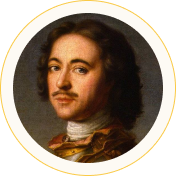
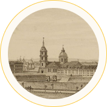
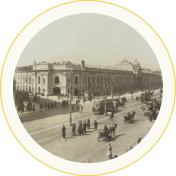
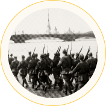
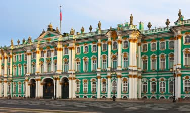
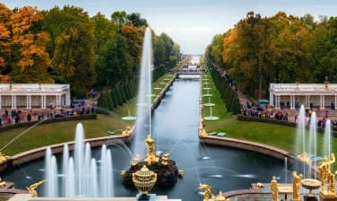

О городе
В этом путеводителе мы расскажем о самых интересных местах Санкт-Петербурга, которые обязательно стоит посетить при поездке в этот прекрасный город.
История
-

16 (27 по новому стилю) мая 1703 года
Основание Санкт-Петербурга Петром I
-

21 мая 1712 года
Санкт-Петербург становится официальной столицей России
-

1914 год
Переименование в Петроград
-
1918 год
Перенос столицы из Петрограда в Москву
-
26 января 1924 года
Переименование Петрограда в Ленинград в честь В.И. Ленина
-

8 сентября 1941—27 января 1944 гг
Блокада Ленинграда, начатая войсками Финляндии и Германии
-
8 мая 1965 года
Присвоение городу Ленинграду звания Города-героя. Ленинград — город-герой
-
6 сентября 1991 года
Возвращение городу прежнего названия Санкт-Петербург, о чём был подписан Указ Президиума Верховного Совета РСФСР
-

22 сентября 2012 года
Рождение 5-ти миллионного жителя Санкт-Петербурга
Достопримечательности
Санкт-Петербург — город, который известен своими красивыми зданиями, музеями и парками. Это один из самых красивых городов России, который привлекает миллионы туристов каждый год. В этой статье мы расскажем о самых знаменитых достопримечательностях Санкт-Петербурга.
-
Эрмитаж
Эрмитаж — один из самых известных музеев мира, который находится в самом сердце Санкт-Петербурга. Это огромный музей с более чем 3 миллионами экспонатов, включая произведения искусства, античные скульптуры, древние монеты и многое другое. Здание музея само по себе является достопримечательностью — это огромный дворец с белоснежными колоннами и золотыми украшениями.
-
Дворцовая
площадьДворцовая площадь — это центральная площадь Санкт-Петербурга, на которой находятся некоторые из самых знаменитых достопримечательностей города, такие как Зимний дворец, Эрмитаж и Александровский столб. Площадь окружена красивыми зданиями и колоннами, а также является местом проведения различных праздников и мероприятий.
-
Зимний дворец
Зимний дворец — один из самых красивых и известных дворцов России. Он был построен в XVIII веке для императорской семьи и находится на Дворцовой площади. Сегодня в здании Зимнего дворца находится Эрмитаж.
-
Петергоф
Петергоф — это знаменитый дворцово-парковый комплекс, расположенный на берегу Финского залива. Он был основан Петром I в начале XVIII века и является одним из самых красивых и известных достопримечательностей Санкт-Петербурга. В Петергофе находятся многочисленные фонтаны, скульптуры и дворцы.
-
Исаакиевский
соборИсаакиевский собор — это один из самых красивых и величественных храмов Санкт-Петербурга. Он был построен в XIX веке и является одним из символов города. Собор украшен куполами, колоннами и мозаиками, а также является одной из самых высоких церквей в мире.
Бюджет поездки
Перед поездкой необходимо рассчитать приблизительный бюджет, который понадобится вам для путешествия.
-
 Проживаниеот 2000 ₽
Проживаниеот 2000 ₽ -
Средний чек в ресторане1300 ₽
-
Экскурсииот 1000 ₽
-
Сувенирыот 300 ₽